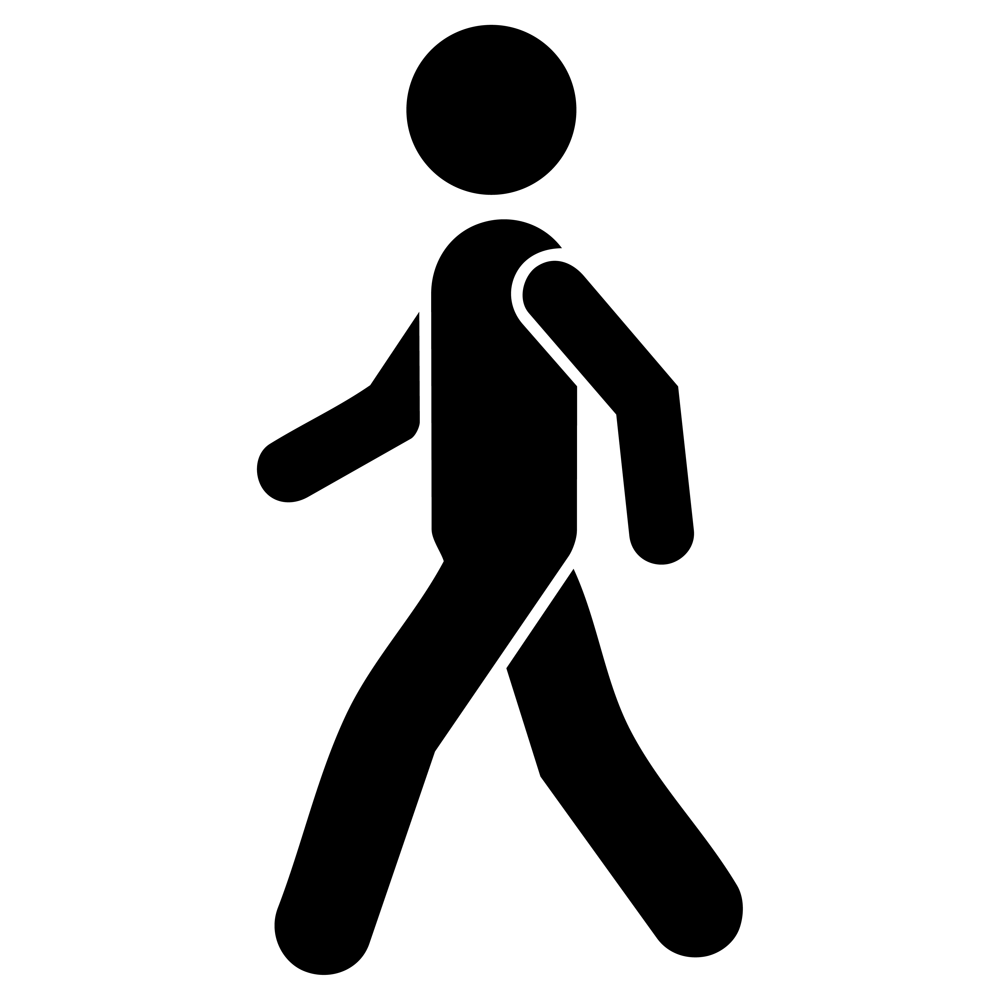

LITTLE FIGURES, BIG CITY
TAKE A WALK
CHOOSE A PLACE TO EXPLORE

MANHATTAN, NEW YORK CITY
WALKING THROUGH NEW YORK

KEEP WALKING
USE ← → OR A / D TO WALK
LITTLE FIGURES, BIG CITY
CHOOSE A PLACE TO EXPLORE

MANHATTAN, NEW YORK CITY
WALKING THROUGH NEW YORK
USE ← → OR A / D TO WALK